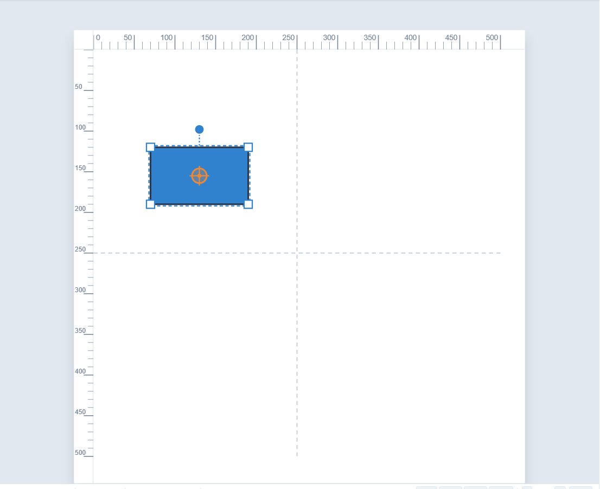
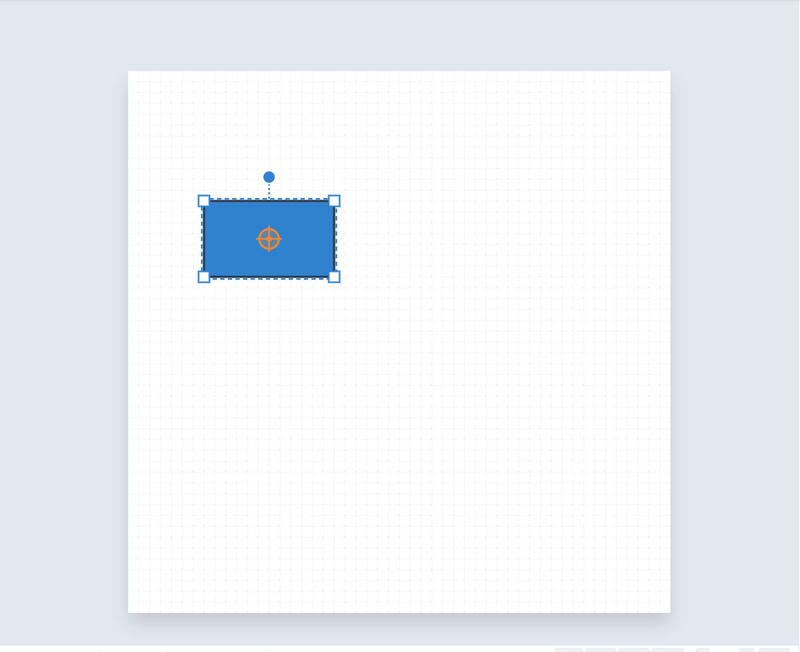
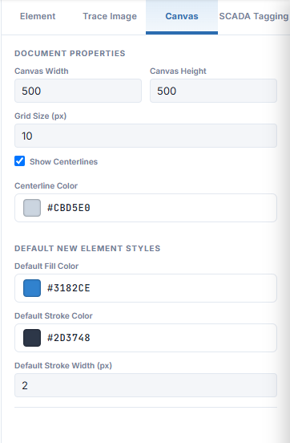
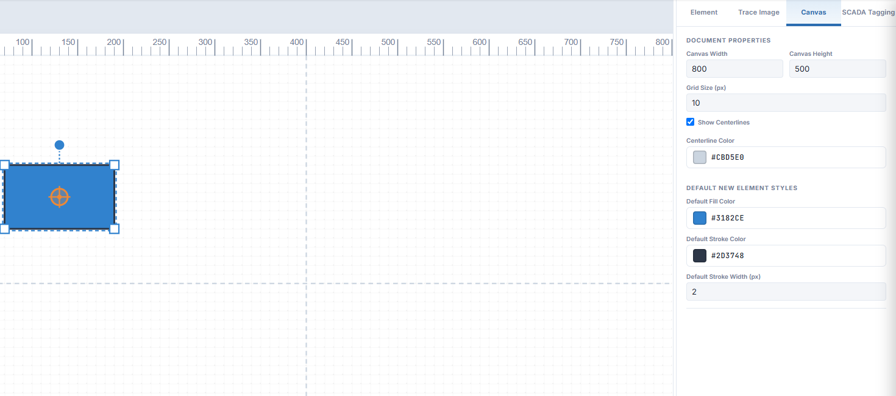
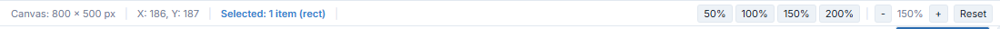

Goal
Control the view with the Grid, Snap and Ruler buttons, set the size of your drawing area on the Canvas tab, and move around with zoom and keyboard nudging.
Good SCADA graphics are tidy: things line up, sit square and are the size you meant. This chapter covers the tools that make that easy.
Part 1: Grid, Snap and Ruler
Three toggle buttons sit in the menu bar, to the left of the theme button. A blue outline means the button is switched on.
Grid
Shows or hides the dotted grid pattern on the canvas.
Snap
Turns magnetic snapping on or off. With Snap on, shapes you draw and move jump to the nearest grid line, so edges line up exactly.
Ruler
Shows or hides the pixel rulers along the top and left of the canvas, and the dashed centrelines through the middle.
Here is the canvas with the grid switched off. Snapping still works if Snap is on, but the dots are no longer drawn.

And with the rulers switched off, you get the maximum drawing room.

A good habit is to leave Grid and Snap on while building a diagram, and turn Snap off only for the odd small adjustment that needs to sit between grid lines.
Part 2: The Canvas tab
Click the Canvas tab at the top of the Inspector. Its first section, DOCUMENT PROPERTIES, controls the drawing area itself.

Canvas Width and Canvas Height
The size of the artboard in pixels. The default is 500 × 500.
Grid Size (px)
The spacing of the grid, and so the distance things snap by. The default is 10.
Show Centerlines and Centerline Color
The dashed lines through the middle of the canvas, useful for centring symbols.
Change the width to 800 and press Tab. The canvas grows at once, and the rulers follow.

Match the size to where it will be used
If the drawing is going to sit on a SentinelSCADA screen, set the canvas to the size you want it to appear on that screen. It saves scaling later.
Further down the Canvas tab, DEFAULT NEW ELEMENT STYLES sets the fill colour, stroke colour and stroke width given to every new shape you draw. Set these once to match your house style and each shape starts out right.
Note SimpleVG remembers your canvas size, grid size, default styles, and the Grid, Snap and Ruler settings in the browser, so they are still there next time you open it.
Part 3: Zoom and the status bar
The status bar under the canvas shows the canvas size, the pointer position in canvas pixels, and how many items are selected. At the right are the zoom controls.

Click 50%, 100%, 150% or 200% to jump to a zoom level, use - and + to step, and Reset to return to the default. Zoom in for fine work, and out to see the whole diagram.
Part 4: Nudging with the keyboard
Dragging gets a shape close. For the last pixel, select it and use the arrow keys:
↑↓←→ nudge by 1 pixel.
Shift plus an arrow key nudges by 10 pixels.
Ctrl+R rotates the selection 15° clockwise, and Ctrl+U rotates it 15° anti-clockwise.
Recap
Grid, Snap and Ruler in the menu bar toggle the dots, the magnetic snapping and the rulers.
The Canvas tab sets the canvas width and height, the grid size, and the default fill and stroke for new shapes.
The status bar shows size, pointer position and selection count, and holds the zoom controls.
Arrow keys nudge a selection by 1 pixel, or 10 with Shift.
In the next chapter we bring in ready-made SCADA symbols from the libraries.